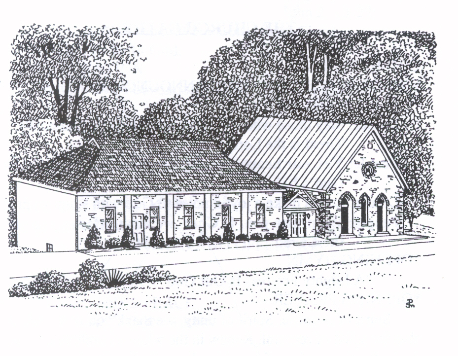

Worship
Join us for joyous and prayerful worship every Sunday morning at 9:00am in person in the Sanctuary, or online on our Facebook page. Please come as you are; no formal dress required.
Founded in 1783 · New Windsor, Maryland
A warm, informal, and welcoming congregation gathering on ground that has held Methodist worship for more than two centuries. Whether you're an old member or a newcomer, please come as you are.

Welcome
Thanks for visiting. Stone Chapel United Methodist Church was founded and the first stone church built in 1783, making us one of the oldest Methodist churches in America. It has since been rebuilt twice more (once in 1800, and again in 1884) on the same site, each time reusing the original stones and adding new materials as the congregation has grown. You can read that whole remarkable story on our history page.
Here at Stone Chapel, we (the people called Methodists) welcome old members and newcomers alike every Sunday. You will find a warm, informal, and inviting congregation that is excited to see you and to share a little about who we are and what we do. Please come as you are; there is no formal dress code.
What We Do
Join us for joyous and prayerful worship every Sunday morning at 9:00am in person in the Sanctuary, or online on our Facebook page. Please come as you are; no formal dress required.
At Stone Chapel, and across the United Methodist Church, we love our neighbors just as we love one another: our siblings in Christ. If you long for a stronger relationship with God, reach out, or simply stop by any Sunday.
Our congregation regularly gives to local and international causes, offers hot meals to those in need, and hosts local bluegrass bands in our social hall. We are always looking for new ways to help the New Windsor and Westminster communities.
Colonial Day at the Strawbridge Shrine in New Windsor will be held on Saturday, July 11.
Our next Loaves and Fishes will be on Saturday, July 18 at Westminster Church of the Brethren. Lunch packing will be the day before on Friday, July 17 in the social hall kitchen. See Sue Stultz for details.
Every month, the second and fourth Sunday mission offerings go to different activities. July’s second Sunday offering supports Westminster Rescue Mission, a nonprofit Christian organization that provides faith-based rehabilitation and counseling programs, as well as a food pantry. The Fourth Sunday offerings always go to Loaves and Fishes and Missionary Erin Magada of the Petros Zoe Initiative in Uganda.